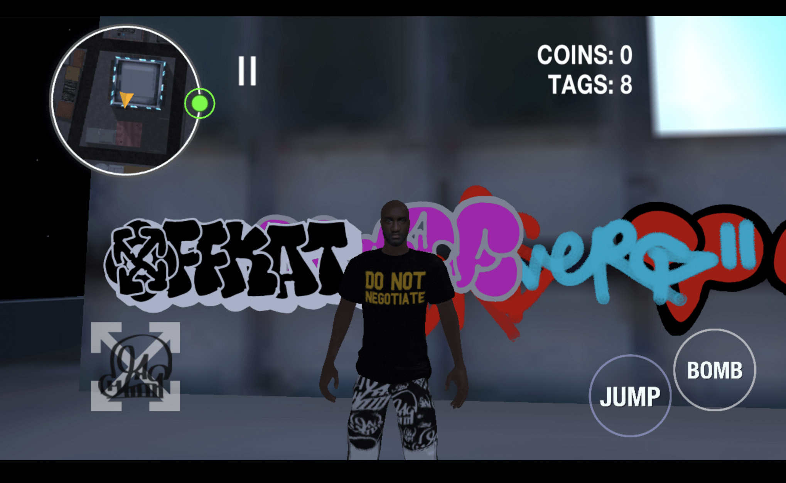
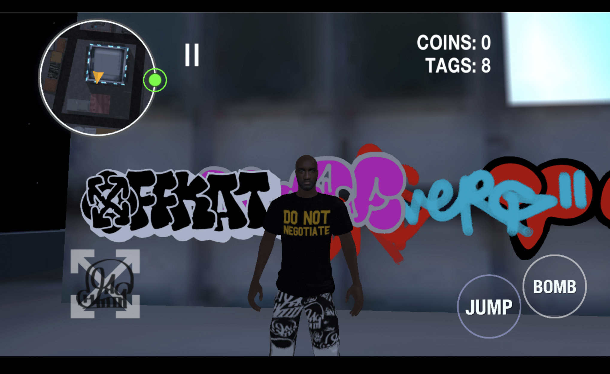

Immerge l’utente in un mondo nuovo: scenari fantastici si plasmeranno mostrandoti alcuni elementi dell’archivio: sbloccherai, (tipo la modalità arcade dei videogame), oggetti unici della nostra collezione.
FASI DELL’OPERA
Come prima fase sarebbe interessante creare una piccola room con un paio di opere che si vogliono lanciare come starter.
Dare la possibilità all’utente di crearsi il proprio avatar da poter personalizzare con un paio di vestiti. ———> successivamente possiamo pensare alla parte di “guardaroba” di come farlo vedere (elenco tipo web può essere interessante mettere quando esce un capo mettere un link anche per prendere il capo virtuale?)
Espandere il mondo il guardaroba e le opere dell’archivio visitabili (possono anche essere foto video o audio non per forza devono essere dei file 3D)
Possibilità di fare delle release dove il “campout” diventa virtuale, gli avatar possono aspettare il capo che esce come se fosse travis nel video: ovviamente aspettano per comprare quello vero ma si può dare la possibilità di farlo anche in versione 3D
Si possono fare degli eventi o dei talk con artisti (si possono intervistare persone da Tokyo a NY a Milano)

 
